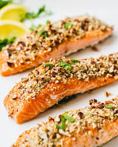

t
Pecan Salmon

Description
This recipe is to make pecan crusted salmon.
This easy-to-make dish is a great go-to fish dish with little preparation.
Ingredients
- 1lb of Salmon
- 1C of Crushed Pecans
- 1/2C of Bread Crumbs
Steps
- Preheat the oven to 400F.
- Deskin/bone the salmon if necessary and wash.
- Place the salmon on a greased baking sheet.
- Mix the pecans and bread crumbs together, and then place them on the salmon.
- Cook the salmon for 13-15 minutes.
- Enjoy!